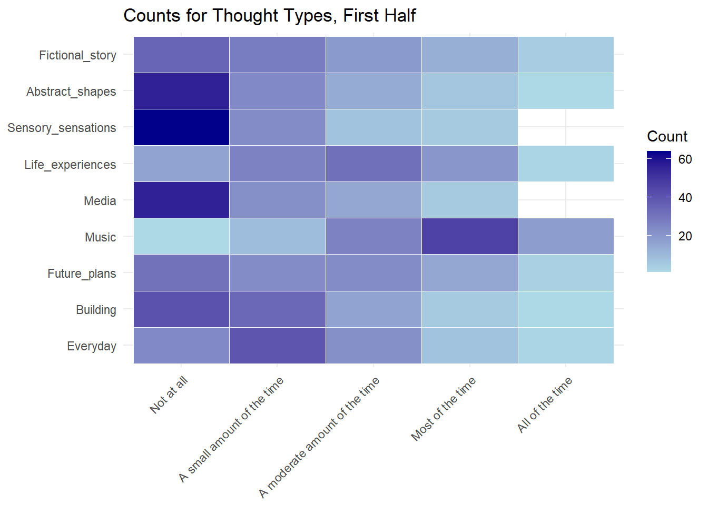
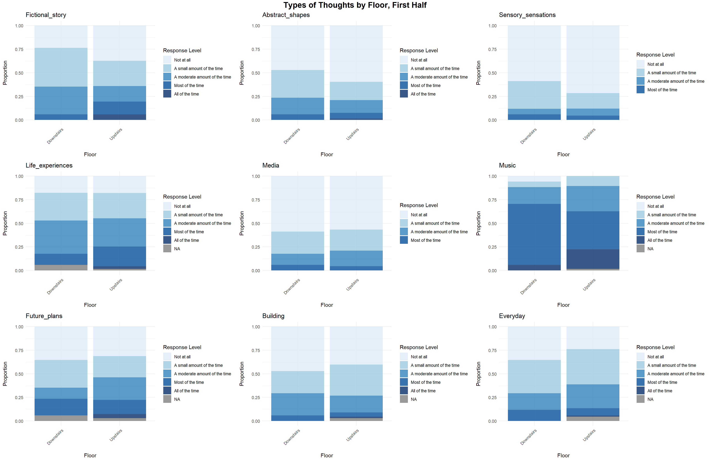

library(tidyverse)
library(broom)
library(performance)
library(ordinal)
library(car)
library(ggeffects)
library(gofcat)
library(brms)
library(emmeans)
library(knitr)
library(dplyr)
library(ggplot2)
library(tidyr)
library(gridExtra)
library(grid)
library(MASS)
library(reshape2)
library(reshape)
library(logistf)
library(corrplot)#Part 1 ##Descriptive 1
First we load the data for the first half of the concert, removing columns we don’t want. I’ve also recoded the hall locations into two factors, ‘Downstairs’ and ‘Upstairs’.
#Loading dataset, sheet 1
library(conflicted)
conflict_prefer("filter", "dplyr")
input1 <- "https://raw.githubusercontent.com/hw3446/Final_Project_PUC/main/input/PUC1.csv"
data_paper <- read_csv(input1)
##First we need to recode some of the values in the dataframe.
recode <- c("1" = "Not at all",
"2" = "A small amount of the time",
"3" = "A moderate amount of the time",
"4" = "Most of the time",
"5" = "All of the time")
recode2 <- c("1" = "Not at all",
"2" = "Slightly",
"3" = "Moderately",
"4" = "Mostly",
"5" = "Entirely")
recode3 <- c("1" = "Very rarely",
"2" = "Somewhat rarely",
"3" = "Moderately frequently",
"4" = "Frequently",
"5" = "Very frequently")
data_paper[, 2:10] <- lapply(data_paper[, 2:10], function(x) recode[as.character(x)])
data_paper[, 13:15] <- lapply(data_paper[, 13:15], function(x) recode2[as.character(x)])
data_paper[, 18:20] <- lapply(data_paper[, 18:20], function(x) recode2[as.character(x)])
data_paper[, 24] <- lapply(data_paper[, 24], function(x) recode3[as.character(x)])Then we load the qualtrics data.
library(conflicted)
conflict_prefer("filter", "dplyr")
input2 <- "https://raw.githubusercontent.com/hw3446/Final_Project_PUC/main/input_qualtrics/PUC1.csv"
data_qualtrics <- read_csv(input2)
data_qualtrics <- data_qualtrics %>% dplyr::filter(Finished == "TRUE") %>%
dplyr::select(-StartDate, -EndDate, -Status, -Progress, -Duration,
-RecordedDate, -DistributionChannel, -UserLanguage, -Finished, -Q1, -ResponseId)The way people select composer and movements is different for the two surveys so we need to get them in a matching format:
composer_initials <- data.frame(
composer = c("Beethoven", "Hough"),
composer_initial = c("B", "H")
)
data_long <- data_qualtrics %>%
pivot_longer(
cols = starts_with("Movement"),
names_to = "source_col",
values_to = "movement_label"
) %>%
filter(!is.na(movement_label)) %>%
mutate(
composer = case_when(
str_detect(source_col, "_B_") ~ "Beethoven",
str_detect(source_col, "_H_") ~ "Hough"
),
type = case_when(
str_detect(source_col, "_mem$") ~ "mem",
str_detect(source_col, "_story$") ~ "story"
),
movement = as.integer(str_extract(movement_label, "\\d+"))
) %>%
left_join(composer_initials, by = "composer") %>%
mutate(code = paste0(composer_initial, movement))
data_wide <- data_long %>%
dplyr::select(ID, type, code) %>%
pivot_wider(
names_from = type,
values_from = code,
names_prefix = "Movement_"
)
final_qualtrics <- data_qualtrics %>%
left_join(data_wide, by = "ID")# Combine the data frames
data <- bind_rows(data_paper, final_qualtrics)
data <- data%>% dplyr::select(-Movement_H_story, -Movement_B_story, -Piece_story, -Movement_H_mem, -Movement_B_mem, -Piece_mem)A dataframe is created showing thought types in a long format with counts for each frequency.
thought_types <- c("Fictional_story", "Abstract_shapes", "Sensory_sensations", "Life_experiences", "Media", "Music", "Future_plans", "Building", "Everyday")
thoughts_long <- data %>%
pivot_longer(cols = thought_types,
names_to = "Category",
values_to = "Response") %>%
count(Category, Response) %>%
mutate(Response = factor(Response,
levels = c("Not at all",
"A small amount of the time",
"A moderate amount of the time",
"Most of the time",
"All of the time"))) %>%
mutate(Category = factor(Category, levels = rev(c("Fictional_story",
"Abstract_shapes",
"Sensory_sensations",
"Life_experiences",
"Media",
"Music",
"Future_plans",
"Building",
"Everyday")))) %>% filter(!is.na(Response))This dataframe is used for the first plot, which shows the counts for each type of thought during the first half.
ggplot(thoughts_long, aes(x = Response, y = Category, fill = n)) +
geom_tile(color = "white") + # Add white borders to tiles
scale_fill_gradient(low = "lightblue", high = "darkblue") + # Adjust color gradient
labs(title = "Counts for Thought Types, First Half", x = NULL, y = NULL, fill = "Count") +
theme_minimal() +
theme(axis.text.x = element_text(angle = 45, hjust = 1)) # Rotate x-axis labels
Then we examine the counts for the movements people select as invoking the most vivid memory or story.
mems <- data$Movement_mem %>% na.omit() %>% toupper()
stories <- data$Movement_story %>% na.omit() %>% toupper()
# Split values by ";", ",", or whitespace
split_values_mem <- unlist(strsplit(mems, "[; ,]+"))
split_values_story <- unlist(strsplit(stories, "[; ,]+"))
# Trim whitespace
split_values_mem <- trimws(split_values_mem)
split_values_story <- trimws(split_values_story)
# Count occurrences
value_counts_mem <- table(split_values_mem)
value_counts_story <- table(split_values_story)The movement counts are then plotted.
#Reorder the Movement factor levels for Beethoven and Hough
recode_map <- c("B1" = "Beethoven, Movement 1 — Allegro con brio",
"B2" = "Beethoven, Movement 2 — Adagio affettuoso ed appassionato",
"B3" = "Beethoven, Movement 3 — Scherzo",
"B4" = "Beethoven, Movement 4 — Allegro",
"H1" = "Hough, Movement 1 — Au boulevard",
"H2" = "Hough, Movement 2 — Au parc",
"H3" = "Hough, Movement 3 — À l'hôtel",
"H4" = "Hough, Movement 4 — Au théâtre",
"H5" = "Hough, Movement 5 — À l'église",
"H6" = "Hough, Movement 6 — Au marché")
# Recode values to descriptive names using recode_map
recoded_mem <- dplyr::recode(split_values_mem, !!!recode_map)
recoded_story <- dplyr::recode(split_values_story, !!!recode_map)
# Convert recoded values to data frames
df_mem_counts <- as.data.frame(table(recoded_mem))
colnames(df_mem_counts) <- c("Movement", "count")
df_story_counts <- as.data.frame(table(recoded_story))
colnames(df_story_counts) <- c("Movement", "count")
# Add a Composer column (Beethoven for B1-B4, Hough for H1-H6)
df_mem_counts$Composer <- ifelse(grepl("^Beethoven", df_mem_counts$Movement), "Beethoven", "Hough")
df_story_counts$Composer <- ifelse(grepl("^Beethoven", df_story_counts$Movement), "Beethoven", "Hough")
# Set movement factor levels for proper ordering
df_mem_counts$Movement <- factor(df_mem_counts$Movement, levels = recode_map)
df_story_counts$Movement <- factor(df_story_counts$Movement, levels = recode_map)
# Plot for 'memories'
mem_plot <- ggplot(df_mem_counts, aes(x = Movement, y = count, fill = Movement)) +
geom_bar(stat = "identity", position = "dodge") +
facet_wrap(~ Composer, scales = "free_x") + # Separate Beethoven & Hough
theme_minimal() +
labs(title = "Movement Counts for Memories", x = "Movement", y = "Count") +
theme(axis.title.x = element_blank(), # Remove x-axis title
axis.text.x = element_blank(), # Remove x-axis labels
axis.ticks.x = element_blank()) +
scale_fill_brewer(palette = "Set3") +
guides(fill = guide_legend(title = "Movement")) +
scale_y_continuous(breaks = scales::breaks_pretty(n = 5))
# Plot for 'stories'
story_plot <- ggplot(df_story_counts, aes(x = Movement, y = count, fill = Movement)) +
geom_bar(stat = "identity", position = "dodge") +
facet_wrap(~ Composer, scales = "free_x") + # Separate Beethoven & Hough
theme_minimal() +
labs(title = "Movement Counts for Stories", x = "Movement", y = "Count") +
theme(axis.title.x = element_blank(), # Remove x-axis title
axis.text.x = element_blank(), # Remove x-axis labels
axis.ticks.x = element_blank()) +
scale_fill_brewer(palette = "Set3") +
guides(fill = guide_legend(title = "Movement")) +
scale_y_continuous(breaks = scales::breaks_pretty(n = 5)) In the next descriptive phase, we want to look at how demographics variables are associated with different types of thoughts. First, we tidy the demographics data and make sure it’s classed in the right way.
#Creating a 'floor' variable, with 2 factors showing downstairs and upstairs locations.
data <- data %>%
mutate(Floor = ifelse(Location %in% c("A", "B", "C", "D", "E", "F"), "Downstairs", "Upstairs")) %>% relocate(Floor, .after = Location)
#Removing NA.s?
data <- data %>%
filter(!is.na(Age) & !is.na(Gender) & !is.na(Music_listening) & !is.na(Floor) & !is.na(Fictional_story) & !is.na(Practice)) %>%
filter(!is.infinite(Age) & !is.infinite(Gender) & !is.infinite(Music_listening) &
!is.infinite(Floor) & !is.infinite(Fictional_story) & !is.infinite(Practice))
#Making sure demographic variables are classed in the right way.
data$Age <- as.numeric(data$Age)
data$Practice <- as.numeric(as.character(data$Practice))
data$Gender <- factor(data$Gender, levels = c('Male', 'Female', 'Other'))
data$Music_listening <- factor(data$Music_listening, levels = c('Very rarely', 'Somewhat rarely', 'Moderately frequently', 'Frequently', 'Very frequently'))
data$Floor <- factor(data$Floor, levels = c('Downstairs', 'Upstairs'))
data$Fictional_story <- factor(data$Fictional_story,
levels = c("Not at all", "A small amount of the time",
"A moderate amount of the time",
"Most of the time", "All of the time"))Various descriptive plots can be made, but there are 3 below for age, gender and floor.
- Descriptive plot for Age and types of thought – age is converted into a grouped variable:
# Create Age bins
data <- data %>%
mutate(Age_group = cut(Age,
breaks = seq(floor(min(Age, na.rm = TRUE)),
ceiling(max(Age, na.rm = TRUE)) + 20, by = 5),
include.lowest = TRUE,
right = FALSE))
# List of outcome variables
outcome_vars <- c("Fictional_story", "Abstract_shapes", "Sensory_sensations",
"Life_experiences", "Media", "Music", "Future_plans",
"Building", "Everyday")
# Converting outcome variables to factors with consistent levels for each thought type
data[outcome_vars] <- lapply(data[outcome_vars], factor,
levels = c("Not at all", "A small amount of the time",
"A moderate amount of the time", "Most of the time",
"All of the time"))
# Creating a single summary_data dataframe
summary_data <- data %>%
pivot_longer(cols = all_of(outcome_vars), names_to = "Outcome", values_to = "Response") %>%
group_by(Age_group, Outcome, Response) %>%
summarise(count = n(), .groups = "drop") %>%
group_by(Age_group, Outcome) %>%
mutate(prop = count / sum(count)) %>%
ungroup()
# Looping through each outcome variable to generate plots
plot_list <- list()
for (outcome in outcome_vars) {
plot_data <- summary_data %>% filter(Outcome == outcome)
plot <- ggplot(plot_data, aes(x = Age_group, y = prop, fill = Response)) +
geom_bar(stat = "identity", position = "stack", alpha = 0.8) +
labs(x = "\nAge Group", y = "Proportion\n", title = paste(outcome)) +
scale_fill_manual(name = "Response Level",
values = setNames(c("#deebf7", "#9ecae1", "#3182bd", "#08519c", "#08306b"),
levels(data[[outcome]]))) +
theme_minimal() +
theme(axis.text.x = element_text(angle = 45, hjust = 1))
plot_list[[outcome]] <- plot
}
# Arranging plots in a grid and saving
title_grob <- textGrob("Types of Thoughts by Age Group, First Half", gp = gpar(fontsize = 16, fontface = "bold"))
Age_thoughts_grid <- invisible(grid.arrange(
grobs = plot_list,
ncol = 3,
top = title_grob
))
- Descriptive plot for gender and types of thought – for now gender has been filtered for male and female.
# Remove missing values + filter
data <- data %>%
filter(!is.na(Gender)) %>% filter(Gender != 'Other')
# Create a single summary_data dataframe
summary_data <- data %>%
pivot_longer(cols = all_of(outcome_vars), names_to = "Outcome", values_to = "Response") %>%
group_by(Gender, Outcome, Response) %>%
summarise(count = n(), .groups = "drop") %>%
group_by(Gender, Outcome) %>%
mutate(prop = count / sum(count)) %>%
ungroup()
# Looping through each outcome variable to generate plots
plot_list <- list()
for (outcome in outcome_vars) {
plot_data <- summary_data %>% filter(Outcome == outcome)
plot <- ggplot(plot_data, aes(x = Gender, y = prop, fill = Response)) +
geom_bar(stat = "identity", position = "stack", alpha = 0.8) +
labs(x = "\nGender", y = "Proportion\n", title = paste(outcome)) +
scale_fill_manual(name = "Response Level",
values = setNames(c("#deebf7", "#9ecae1", "#3182bd", "#08519c", "#08306b"),
levels(data[[outcome]]))) +
theme_minimal() +
theme(axis.text.x = element_text(angle = 45, hjust = 1))
plot_list[[outcome]] <- plot
}
title_grob <- textGrob("Types of Thoughts by Gender, First Half", gp = gpar(fontsize = 16, fontface = "bold"))
Gender_thoughts_grid <- grid.arrange(
grobs = plot_list,
ncol = 3,
top = title_grob
)
- Descriptive plot for floor
# Remove missing values
data <- data %>%
filter(!is.na(Floor))
# Create a single summary_data dataframe
summary_data <- data %>%
pivot_longer(cols = all_of(outcome_vars), names_to = "Outcome", values_to = "Response") %>%
group_by(Floor, Outcome, Response) %>%
summarise(count = n(), .groups = "drop") %>%
group_by(Floor, Outcome) %>%
mutate(prop = count / sum(count)) %>%
ungroup()
# Looping through each outcome variable to generate plots
plot_list <- list()
for (outcome in outcome_vars) {
plot_data <- summary_data %>% filter(Outcome == outcome)
plot <- ggplot(plot_data, aes(x = Floor, y = prop, fill = Response)) +
geom_bar(stat = "identity", position = "stack", alpha = 0.8) +
labs(x = "\nFloor", y = "Proportion\n", title = paste(outcome)) +
scale_fill_manual(name = "Response Level",
values = setNames(c("#deebf7", "#9ecae1", "#3182bd", "#08519c", "#08306b"),
levels(data[[outcome]]))) +
theme_minimal() +
theme(axis.text.x = element_text(angle = 45, hjust = 1))
plot_list[[outcome]] <- plot
}
title_grob <- textGrob("Types of Thoughts by Floor, First Half", gp = gpar(fontsize = 16, fontface = "bold"))
Floor_thoughts_grid <- grid.arrange(
grobs = plot_list,
ncol = 3,
top = title_grob
)